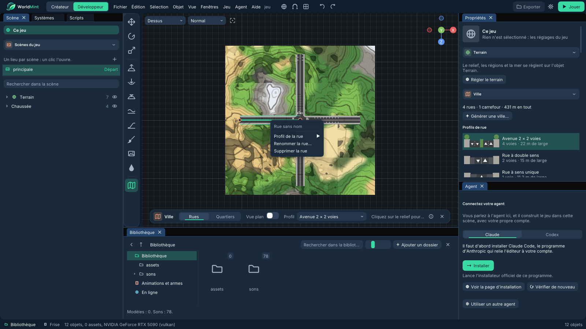
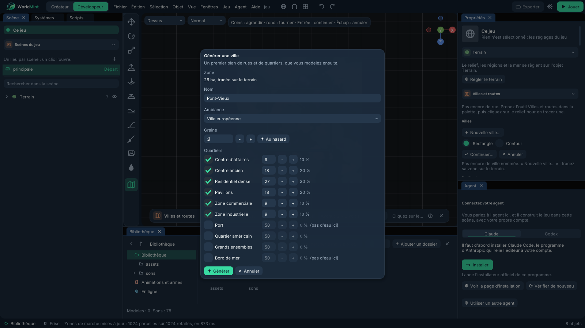

Cities and roads¶
The Cities and roads tool lays out a city on the ground. You draw the plan (the streets, their profile, their junctions, the districts), or have it generated in one go; WorldMint builds the roadway, the sidewalks, the markings, the pedestrian crossings, the street trees and the bridges, and flattens the ground under them.
This is the Cities and roads extension: it appears by itself in the editor when it is installed (see A paid extension).

Where to find the tool¶
- In the palette, left of the view: the map icon (under the terrain tools when the scene has a terrain). When picked, it opens its options bar at the bottom of the view: Streets or Districts, Plan view, the profile or the style of the next drawings, a help (the i) and the cross that puts the tool away (like Escape).
- In the properties, when nothing is selected (This game): the Cities and roads section. It gives the number of streets and junctions and their length, the Towns list and the New town… button, the list of Street profiles, the Plan view switch, the list of Districts and the list of District styles.
Generating a city¶
To start from a whole city rather than a blank page:
- Cities and roads section of the properties, under Towns: New town….
- Size: small (500 × 500 m), medium (1 × 1 km), large (1.4 × 1.4 km, i.e. 2 km²) or custom (from 200 to 3,000 m on each side).
- Center: in the middle of the view, or at the center of the ground.
- Seed: a number. The same number gives the same city again; Random draws another one.
- Districts: tick the styles you want (business center, old town, dense residential, suburban houses, shopping area, industrial area, port, American quarter, housing estates, seaside) and give the share of each; the percentage next to it says what it gives. The most central ones go in the middle, the suburban houses on the edge, the port and the seaside by the water (unticked when there is no water).
- Generate.

The city is built in the background: the status line says "Generating the city…", and the editor stays free. You get districts, streets between them, two avenues that cross the city following the ground, and the streets of each district after its style (a grid, an old winding layout, suburban houses with their dead ends), each with a name. The axes follow a hierarchy set by the district style: in the business center, the American quarter, the shopping area, the seafront and the housing estates, the avenues become grand boulevards with 2 × 4 lanes and a planted median, and one street in three of the grid an arterial road with 2 × 3 lanes; in the industrial area and the port, one street in two (large blocks, for the trucks); in the working-class district and the upmarket district, the avenues become arterial roads with 2 × 3 lanes, with no other arterial road; the other styles have none yet. A wide road is laid only where the ground fits its maximum grade: on steeper ground the street keeps its usual profile. A district with large blocks, which has fewer streets each way than the number asked for, takes its middle street as the arterial road. Each district style sets it (Profile of the main axes, Profile of the arterial roads, An arterial road every N streets). At the approach of a crossing, the raised median of an arterial road or a grand boulevard gives way, over 25 m, to a left-turn lane for the arriving cars (the Left-turn lane setting of the profile, 0: none); what is left of the median keeps its curb. Only for the cars that can turn left: at a T junction, the way with no street on its left gets no left-turn lane, and its median, with its trees, runs on to the pedestrian crossing. An area almost entirely under water gets neither district nor street.
The city arrives as one single step: one Ctrl+Z removes it at once, ground included. If the scene already has streets, the window says so and the button becomes Replace the city: the street profiles and the district styles are kept, and Ctrl+Z gives the old city back.

Then shape it with the gestures below: a generated city is changed like a city drawn by hand.
Several towns¶
A map can hold several small towns side by side, each with its own name and mood.
- In the Cities and roads section, under Towns, click New town…: the tool is picked up.
- Draw the town's area on the terrain:
- Rectangle: drag on the terrain. Then pull a corner to resize it, and the circle above it to rotate it.
- Outline: one click per point (to follow a coast, for example). A double-click or Enter closes the outline, Backspace removes the last point, Esc cancels. Once closed, drag any point to move it.
- The drawing snaps to the edge of a neighbouring town (within a few metres): the two towns touch without overlapping. An area that overlaps another town turns red, with the reason when you hover over it.
- Enter or Continue… opens the window: the area's surface, the town's name (drawn at random, change it as you like), its mood (European, American, seaside…), the seed and the districts. Generate adds the town without touching the others; its streets join those of its neighbour at the border. Ctrl+Z removes it.
The Towns list shows each town, its mood and its surface. A click selects one: its outline lights up and the view frames it. Then:
- the name field renames it (Enter keeps the name);
- Regenerate remakes it in the same area with another seed; its name is kept;
- Delete removes its streets, junctions and districts; the other towns stay. Ctrl+Z brings it back.
The snapping distance is set in the plan's data (townSnapDistance, 8 m by default; 0: no snapping).
Drawing streets¶
- Pick the Cities and roads tool, in Streets mode.
- Choose the Profile of the new streets in the list: each profile shows its cross-section (the lanes and their direction, the median, the parking, the sidewalks, the trees). The starting profiles are the 2 × 2 lane avenue, the two-way street, the one-way street, the alley and the pedestrian street (their names, written by the extension, are in French).
- Click on the ground to place the points of the street. Enter, or a double click, ends it. Escape drops it; a right click removes the last point.
The street shows at once as lines. The roadway arrives a few moments later: meanwhile, the status line says "Updating the city…", and you can keep working. Once the roadway is made, the lines become discreet: the nodes only appear around the mouse and on the chosen street. On hover, a street tells its name and profile.
Connecting streets:
- a point placed on a street or on a junction connects the new street to it and ends it: a T junction;
- a street that crosses another one makes a junction there;
- a click on a node (a street end, a junction) starts a new street there;
- two junctions placed too close to each other (the piece of street between them shorter than the room their corners need, which depends on the street widths and angles: farther apart for avenues than for streets) become a single one, halfway between them, with one junction square and its corner sidewalks. Your plan keeps both nodes: move them apart to get two junctions back.
Changing:
- Drag a node or a waypoint: the street follows, and the city is rebuilt around it on release.
- A click on a street chooses it (it lights up). Delete deletes it, with the nodes that no longer connect anything; the roadway goes, the ground comes back. A second click on the chosen street starts a new street there. While the Cities and roads tool is picked, Delete only deletes the chosen street, never an object of the scene.
- Right click on a street: Street profile (the illustrated list), Rename the street…, Delete the street.
- Right click on a junction: Roundabout (choosing it again gives it back its ordinary shape). Cars drive round the ring, the island on their left (counterclockwise seen from above, since the city drives on the right): they enter and leave along curves, take the outer lane for the first exits and the inner lane to turn left or back on a two-lane ring, and give way to the ring when they enter.
What WorldMint builds around the streets¶
None of this is done by hand: everything is rebuilt when the plan changes, and comes back as it was when a street is removed.
- The flattened ground. The terrain flattens under each street, with gentle banks (a slope of 1 in 2) on each side. Streets follow the ground within the slope their profile allows (12%, 8% for an avenue); junctions, their pedestrian crossings and their stop lines stay flat. Removing the city gives the original ground back, exactly.
- No retaining walls. The ground always meets the streets with a bank, never a wall. On a steep side, the bank takes the room it needs and gets steeper at its end to meet the terrain; it never rises above a sidewalk or a roadway.
- Bridges. A street that crosses a hollow deeper than 3 m, or water, becomes a bridge: a deck, railings and piers set on the ground (30 m at most between two). The roadway enters it without a step.
- Street trees, along the sidewalks, at the spacing the profile gives, outside junctions and bridges. When the profile names no tree model, WorldMint plants its shipped trees ("Realistic Trees Collection" by Jungle Jim, CC BY 4.0, credited on the Credits page): a medium tree along the sidewalks, a large one on a median at least 4 m wide, each at a size that keeps its leaves off the facades. They are copied with their licence into the project's
ville/arbres/folder. Along the sidewalks they are pruned like city trees: a pruned copy is written to the project cache (.worldmint/ville/arbres/; the shipped model is never touched) without the low branches (below 2.4 m,treeClearance), without anything over the roadway below 4.5 m (treeRoadClearance, room for trucks), without anything entering the facade or reaching more than 1.5 m over the roadway (treeCrownOverRoad). A removed branch goes with its leaves and the branches it carries: no leaf is left floating; the trunk always stays. A pruned tree always keeps at least 40% of its leaves (treeMinFoliage): otherwise WorldMint takes the same tree taller (its crown rises above the roadway), slightly smaller, or another shipped tree; if none fits, the simple shape. At the foot of each sidewalk tree there is a 1.3 m square tree pit (treePitSize, 0 for none): a frame of the same stone as the sidewalk curb, with rounded corners and edges, cut into blocks like the curb, which you can walk on, and a soil bed, the trunk in the middle; no street furniture is placed on it. The soil and the granite of the curbs are real Poly Haven textures (CC0, "Mud Forest" and "Granite Tile 03", credited on the Credits page), copied into the project (ville/matieres/) where you can change them. A model chosen in the profile always comes first;shippedTrees: falsein the generation settings brings back the simple shape. - Cleared grass. The plants sown by the terrain grow neither on the roadway, nor on the sidewalks, nor in the junctions: the grass stops at the edge of the sidewalk. Under a bridge, they only move away where the ground is close to the deck.
Roads outside the city¶
The same tool also draws roads through fields and mountains. Street profiles come in four families: City (streets, the avenue, the boulevard, the cobbled street, the arterial road with 2 × 3 lanes, the grand boulevard with 2 × 4 lanes…), Country (the secondary road, the expressway with 2 × 2 lanes, the small country road), Mountain (the mountain road) and Paths (the forest track, the dirt path, the footpath, the paved path). A road joins a street through a real junction.
A country road has no sidewalk, so no curb:
- Shoulders: a strip on each side, level with the road, between the roadway and the ditch. At junctions, the corners are roadway up to the edge; the sidewalk of a street that arrives there ends with a curb.
- Ditches: a hollow on each side, beyond the shoulder, dug into the ground. Removing the road gives the original ground back. Grass and plants grow in the ditch.
- Barriers: a steel guardrail or a railing, set on both sides, only where the ground drops beside the road, or automatically: only where a car can leave the road, along a high embankment and on the outside of a bend too tight for the road's design speed. The roads outside the city (secondary road, expressway, country, mountain) have automatic guardrails; city streets have none. There are none on a bridge (it has its own railings), in a junction, along a street with sidewalks, or in short isolated pieces. A model of the project can replace the made guardrail: it is repeated along the road at its measured length.
- Markings: full (lines between lanes, edge lines along the lanes, crossings at junctions), edge only (the two lines along the edges) or none. A city street has no edge line: its sidewalks border it.
- The marking standard: American by default (the usage of American streets, the MUTCD) or European. In American: a yellow line separates the two directions (double solid, or broken on small streets, then doubled before junctions, or none); white dashes of 3 m every 12 m separate lanes going the same way; a median has yellow edges, the left-turn lane a double yellow line on its left, its arrow and the word ONLY; give way is a row of white triangles pointing at the incoming cars (only where the YIELD sign stands); crosswalks have bars (continental) at junctions with traffic lights and two lines elsewhere. At American roundabouts: white triangles at each entry (traffic yields to the ring), a solid yellow line along the island and, on a two-lane ring, white dashes between its lanes; on an entry of two lanes or more, one arrow per lane (left and straight on the leftmost, straight and right on the rightmost). The standard is chosen for the whole city in the generation settings (American by default); a profile follows it (The city's, the default) or forces its own. Every measure is set in the profile's Markings group. In European, the markings stay as before (white lines, dashes at give-way lines).
- Trees: on a road without sidewalks, street trees are planted beyond the ditch.
The width of shoulders and ditches, the depth of ditches, the kind of barrier and the markings are settings of each profile. The height of guardrails and railings, the spacing of their posts and their color are settings shared by the whole city. A long road (several kilometers) is laid down without freezing the editor.
Road materials¶
Every part of a road has its material: the roadway, the sidewalks, the curbs, the gutters, the shoulders and the markings. By default the tool makes its own materials, without downloading anything: asphalt, cobblestones, paving slabs, concrete, granite, gravel, earth and road paint. They are real images (color, relief, shine), with no visible seam, at the right size: a cobblestone is about ten centimeters, a slab half a meter. They are kept in the project's hidden folder and made again only when a recipe changes.
Each material has its states: new, worn, cracked or patched; markings can also be faded (the paint has holes). The state changes from one street to the next, always the same for the same plan:
- in the city, the district style decides (new in the business district, worn and patched in the industrial zone, cobbled in the old town);
- outside the city, it comes from the road profile, or from the upkeep chosen for a street (new, worn, cracked, patched);
- a patched roadway has patches: rectangles of newer asphalt laid in the lanes (their material, its state and their tint are set in
contenu/matieres_route.json, thepatchessection of the patched state: a little darker than the roadway, without standing out).
Two neighboring streets do not show the same pattern at the same place, and the pattern follows the street around its bends. In a crossroads it keeps the direction of the widest street: the cobblestones do not suddenly turn when you go from the street into the crossroads. When a street goes on from one piece to the next, the pattern turns with it, and around a sidewalk corner the slabs follow the curve of the curb.
The curb and the gutter, as in a real street:
- the curb is a row of granite (or concrete) blocks that holds the sidewalk: you see their top (15 to 30 cm wide), their edge on the roadway side, rounded (a quarter round) rather than cut at an angle, and a joint about every meter. The sidewalk starts behind it. In the profile, group Edges: the curb top width, the block length, the chamfer; its color is set with the curb tint (yellow, as in Miami);
- the gutter is a strip of cobblestones or slabs at the foot of the curb, at the level of the roadway, where water runs off (25 to 50 cm). It is taken from the roadway: the lanes do not move. Its width is set in Edges (0: no gutter) and its material in the Gutter place. City streets have one; the modern avenue does not.
Replacing a material with one of your project: each part of a profile can use a material from your project (a .wmmat file in the materials folder, made for example from Poly Haven or ambientCG images, or from a pack). The size of its pattern is the one of the material: set it in the material, the road follows. If the file is missing, the road goes back to the made material and says so (the agent sees it too with city_check). The exported game takes the made materials and the images of the materials in use.
Real photos in place of the made materials: the catalog contenu/matieres_ville/matieres.json lists the photo textures shipped with WorldMint. Each entry gives its folder (id), its real size in metres (size: the photo is laid at that size, never stretched to the pattern of a made material), rotate (false for a material with a direction: brick, tiles, wood) and replaces, the made materials it stands in for, with the states it covers (["asphalte"] for all states, or [{"recipe": "asphalte", "wears": ["worn", "cracked"]}]). On the streets and on the buildings alike, a made material that a photo replaces is drawn with the photo, copied into the project (ville/matieres/, with its licence) as a material you can change there; without a photo, the made material stays. The first entry that covers a material wins. You can edit the catalog by hand, or choose a material of your project for a part, which always comes first.
Choose online…: under the material of each part (in the profile's Materials group), this button opens a small window of the online library, on the sources you have already chosen (the asset browser's Online folder, Sources button: Poly Haven, ambientCG). With no source chosen, the window says so and nothing is contacted. It shows textures with their preview, their licence and their real size; the word of the part is searched beforehand (“paving” for the sidewalk, “asphalt” for the roadway), change it as you like. A click downloads the texture into the project (a progress bar shows it, the editor does not freeze), makes it a material at its real size, then puts it on the part. Ctrl+Z removes it. The credits the sources ask for (“Powered by Poly Haven”) stay at the bottom of the window.
Painted paths¶
The trail, the dirt track and the forest track are not laid like a road: they are painted into the ground, like the ground material brush. There is no roadway, no curb and no marking: the dirt or gravel blends into the grass, with a soft, slightly uneven edge. A worn path is a little fainter, with a more uneven edge.
- The ground shape: under a path, the ground is only flattened a little (a profile setting: little for a trail, more for a track). The path follows the slope, with no bank and no wall.
- Plants: nothing grows across the width of the path; grass and trees come back up to its edge.
- Junctions: two trails that meet blend into each other. A trail that reaches a street starts at the edge of the junction, which is laid like the others.
- Ground materials: a path is painted with the ground materials. If the terrain has none yet, the first path turns them on (Terrain ▸ Ground materials); Ctrl+Z removes them with the path. The ground can have at most 16 materials: if it already has them, the path is not painted and the agent says so.
- Removal without a trace: removing a path, or Ctrl+Z, gives back the ground exactly as before: its shape, its paint and its plants.
The material of a path (dirt, gravel) is made in the project folder; it can be replaced by a project material in the profile. The ground paint has one cell per metre: a very narrow trail stays a little blurry seen up close.
The profile gallery¶
The Profile list of the options bar, and the Street profiles list of the section, sort the profiles into four groups: City, Countryside, Mountain and Paths. Each profile shows its cross-section: its lanes and their direction, its median, its parking, its sidewalks, and outside the city its shoulders (light grey, at the level of the roadway), its ditches (a dip under the ground line) and its barriers (two small upright strokes). A path painted in the ground shows as a band of earth blended on the ground line, with no thickness.
Adjusting a profile¶
In the section, a click on a profile picks it for the next streets and opens its settings, in groups that fold:
- General: the family of the profile (where it goes in the gallery), its surface (Paved: a raised roadway; Painted in the ground: a dirt track, a footpath), pedestrian street, intended dead end;
- Lanes: the width and direction of each lane, Add a lane, and the cross to remove one;
- Edges: the median, the parking, the sidewalk width and its curb height, the curb top width, the length of its blocks, its chamfer, the gutter width, the shoulder width, the ditch width and depth, the barrier (none, guardrail, railing), its placement (on both sides, where the ground drops, or automatic, with the ground drop, the grip in bends, the margin before and after a bend and the shortest length) and its model (Guardrail model…, a model of the project, or the made guardrail);
- Markings: full, edge lines only or none;
- Ground: the steepest slope, the deepest cutting and the highest embankment, the design speed (the road rises and falls gently, without bumps, to be driven at that speed; 0: it follows the ground), the flattening, the soft edge of a painted path;
- Trees: their spacing and height;
- Materials: for each part of the way in use (the roadway, the sidewalk and its curb, the gutter, the shoulder, the markings; a painted path has only its roadway), the material (one made by the editor, with its colour swatch, or a material of your project; with no material in the project, the list says so), the tint, and the allowed states: each state has its box and its weight in the draw (new, worn, cracked, patched; markings can be faded, never cracked or patched). A material chosen here wins over the one the district style gives its streets (the concrete sidewalks of the industrial zone, for example); left as shipped, the district's shows.
A refused setting (a value out of range, no state allowed) is written in red under the settings, and the profile does not change. Each change is undone with Ctrl+Z; a dragged slider makes only one. The buttons: New profile (a copy of the open profile, to adjust without touching the streets that keep the original), Rename the profile…, Delete the profile (refused while a street uses it) and Restore this profile (a built-in profile gets its original values back).
In the settings of a district style, the Streets and furniture group also has Street wear (the share of each state, in %, for the streets of the district; the shares always add up to 100%, changing one adjusts the others: new in a business district, worn and patched in an industrial area) and Street materials of the district (the roadway and the sidewalk of city streets: The profile's own, a made material such as the cobbles of an old town, or a project material). A project material chosen in a profile always wins.
The materials of one street¶
Right-click a street ▸ Materials of this street… opens a small window with each part of the street: Roadway, Sidewalk, Curb, Gutter, Shoulder and Markings. For each one: its swatch and the list of materials (the made materials, then the project materials, which replace the made material), Choose online… for a realistic texture from the online library, a Tint, and Back to the district's. The material chosen for a street comes before the one of its district and its profile: a cobbled lane in an asphalt district, a yellow curb on a single avenue. Only the tiles of this street are made again, neither the ground nor the roadway. Each change is undone with Ctrl+Z.
The upkeep of a road¶
The state of each street is drawn once and for all: the same plan always gives the same states. In the city, it comes from the style of the district; outside any district, or for a painted path, from the weights of the profile. Right-click a street ▸ Upkeep forces it on the whole street: As the district says (the draw), New, Worn, Cracked or Patched. When you hover over a street, it tells its profile and the state of its roadway (“Worn, from the district Industrial area”, “New, set by hand”). Each choice is undone with Ctrl+Z.
Drawing districts¶
The city is divided into districts, each with a style: business center, old town, dense residential, suburban houses, shopping area, industrial area, port, American quarter (brick buildings, fire escapes, water tanks on the roofs), housing estates (1970s slabs and towers, loggias), seaside (light render, arcades, roof terraces) (in the gallery, their names are in French for now: « Centre d'affaires », « Centre ancien », « Résidentiel dense », « Pavillons », « Zone commerciale », « Zone industrielle », « Port », « Quartier américain », « Grands ensembles », « Bord de mer »). The style says how its blocks are cut into parcels and what will be built on them: the size of the parcels, the built share, the floors, the setbacks, the roofs, the shops.
The houses of the detached houses district. The Pavillons style lays a real whole house on each built parcel, instead of the generated building: two houses ship with WorldMint ("American House" by AleixoAlonso and "Suburban House V2" by Bogdan Strielecki, CC BY 4.0, credited on the Credits page). Each house has its garage door turned to the street when it has one (the American House), with a concrete driveway from the street to it, and otherwise its front door, with a paved path to it; its front on the setback line of the parcel, and stays at least 1 m from the other limits: never on the sidewalk nor on the neighbour. A house too big for its parcel is never shrunk: the parcel keeps the generated building. The list of houses of a style is data (the style's "houses": the project folder and, for each model, the side of its front door, its share, and the measured middle of its front door and of its garage door): you can put your own there, or ask the agent. Detached-house parcels are 20 to 28 m wide, as in an American suburb; a corner parcel keeps the generated building, which keeps the setback on both streets. A house is whole up to 25 m (the generation setting houseDetailDistance), its lightened version beyond, up to the horizon. Fences: each parcel with a house is fenced, low and continuous along the street (open only on its driveway or its path), higher on the sides and at the back, one fence on a shared limit; each street has its type (white or wooden picket, chain link, wooden screen); no gate by default (gateShare 0: a gate model of your own can close the opening). The shipped fences (TampaJoey, Visthétique) are CC BY 4.0, credited on the Credits page; the list is style data ("fences"), where you can put your own. Each parcel can change its fences side by side (street, left, right, back, seen from the street): no fence, the street's fence, another shipped fence or a model of the project; the change is kept when the city is generated again (ask the agent: city_building_set with "fences").
- In the options bar of the Cities and roads tool, switch from Streets to Districts.
- Choose the Style of the new districts in the gallery: each style shows its color and a small silhouette of its buildings.
- Click on the ground to place the points of the area (a point placed near a junction snaps to it). Enter, or a double click, closes it; Escape drops it; a right click removes the last point.

To change a district:
- A click in a district chooses it: its points become handles. Drag a point to change its shape. Delete removes the chosen district (the streets stay).
- Right click on a point: Remove this point; on a side: Add a point on this side.
- Right click in the district: District style (the gallery), Rename the district…, Another draw (its parcels are cut another way), Delete the district.
Setting a style, or creating your own¶
In the Cities and roads section, the Districts list shows each district with its color, its style and its area. Under District styles, a click on a style opens its settings, arranged in groups: Parcels, Buildings, Shops, Streets and furniture, and its colour on the plan. Each setting has its tooltip.
- Setting a style changes all its districts. To change only one, first make a New style (a copy of the open style), set it, then give it to that district (right click › District style).
- Rename the style… changes its name; Restore this style gives a starting style its original values back; Delete the style is refused as long as a district uses it.
- The Facades group gives the material of each facade use of the style (brick, render, stone, tiles, and the entrance Steps, a granite without joints by default, and the length of their Step blocks…): made, or a project material, with the same Choose online…. It also has the Grime decal, a project image with transparency (an ambientCG
Leakingdecal, for instance, chosen online among the decals). This setting is prepared: facade placement will use it later, with real decals; the computed facade grime has been removed, so it has no effect for now. - The Streets and furniture group is used by Generate a city: the street layout of the district (grid, organic or suburban), the size of the blocks, the profile of its streets, its place in the city (Centrality, By the water).
Each gesture can be undone with Ctrl+Z; a dragged slider makes only one step.
The density of a district¶
Each district has its type (its style: old town, business, houses, working-class district, upmarket district…), which sets its look, and a Density, from 0 to 100 %, which tunes that type from one district to the next. Choose the district in the Districts list: the District density slider appears under it.
- Higher: smaller blocks, narrower and shallower parcels, more built parcels, deeper buildings (less wasted yard) and taller ones, fewer gardens.
- Lower: large blocks, large plots, more setback from the street, lower buildings, more gardens.
- 50 %: the style as it is set. It is the density of a district of an older city: nothing changes there until you move the slider.
The Generate a city window also has a Density, given to every district of the new city; it also changes the size of the blocks of its streets. You then set it district by district. Two types go with it: the working-class district (Quartier populaire: joined, tight buildings of 4 to 7 floors, small blocks, narrow fronts) and the upmarket district (Quartier huppé: villas of 2 to 3 levels on large plots, deep setbacks, gardens, pitched roofs); the European mood has both, the American mood has the upmarket one.
What the density changes, style by style, is in the styles file (styles_quartier.json): lowDensity and highDensity give the value of some settings at 0 % and at 100 % (block size, parcels, built share, built depth, floors, setbacks, planted share); in between, WorldMint goes from one to the other. A setting absent there does not change with the density.
The plan view¶
The Plan view switch (in the options bar and in the Cities and roads section) shows the city from above: the view frames the whole city, each district is filled with the color of its style, the streets are light lines at their width, with their name. Turning it off leaves the view where it is.

Parcels and their changes¶
Each block (the space between streets) is cut into parcels along its streets, by the style of its district: their width on the street, their depth, the built share. In Districts mode and in the plan view, each parcel is drawn with a thin outline; an open parcel (yard, garden, parking) is hatched in pale green, a parcel without access (too narrow, or the ground too high or too low compared to the sidewalk) is red, a changed parcel has a small mark. On hover, a tooltip gives its street and side, its frontage, depth, slope, district, style and access. The cutting is redone in the background: "Cutting the parcels…" in the status line.
In Districts mode, a right-click on a parcel offers, at the top of the district menu:
- Leave open (yard, garden, parking), or Build for an open parcel;
- Style of the parcel ▸: another style for this parcel only;
- Back to the generation: removes its change.
Each change is one step, undone by Ctrl+Z. It stays on its parcel when the city is rebuilt (a node moved, a style set), and follows it when its street is cut by a new junction. When its street is removed, it no longer holds: nothing is lost, the Cities and roads section lists it under Changes that no longer hold, with the reason. Reattach to the nearest gives it to the parcel nearest to where it was; Delete the change removes it.
Buildings mode¶
In the tool bar, Streets | Districts | Buildings: in Buildings mode, the buildings of the city are worked out in the background ("Working out the buildings…" in the status line); the editor never freezes. The building under the mouse gets a thin outline; a click selects it (a bold outline). A click away from any building, or Esc, selects nothing.
The building panel opens in the Cities and roads section:
- its parcel: its street and side, its frontage, depth and slope;
- Style: another style for its parcel only;
- Height (floors): the floors above the ground floor, with the height in metres next to it;
- Roof: Flat, Pitched or Terrace;
- Facade: the recipe of the windows, doors and balconies;
- Wall: the wall material, with its swatch, among those of its style; Other… gives those of the other styles of the city;
- Tint: the colour of the wall; Drawn tint gives back the one of the generation;
- Shop: None, a kind, or Drawn by the style;
- for a two-wing corner building only: Corner shape (Sharp, Cut corner or Rounding) and Corner use (the use of the corner ground floor: Shop, Café, Hotel, Housing, Pharmacy, Bank or Bakery: the shop fronts, the sign, the blind or the terrace of the corner face);
- Changes to this building: each changed setting, with its cross to remove it;
- Replace with…: A model from the library… puts a model of the project in its place, as a landmark (its +z side facing the street); Nothing: I build it myself leaves the parcel empty, as a landmark, for your own objects; its name shows above it in the view, and the empty parcel is outlined with dashes;
- Lock: the building stays as it is, whatever becomes of its style or the seed of the city; a padlock shows above it. Unlock gives it back to the generation;
- Back to the generation: removes all its building changes (its style and use stay).
A right-click on a building gives the same actions, plus One floor higher and One floor lower. Each change is one step, undone by Ctrl+Z; it stays on its parcel when the city is rebuilt.
Moving a building inside its parcel. The chosen building has a handle: a dot at the foot of its street front. With the mouse over it, it turns mint. Drag it: the outline of the building on the ground follows the mouse, toward the street, toward the back or sideways. It stops at the edge of its parcel: never on the sidewalk, never on the neighbour, and it keeps its size. Released, the handle sets the building's Shift, in one step (Ctrl+Z undoes it). Escape during the drag leaves it where it was. If it already touches the edge on the side you drag toward, it does not move: the handle turns orange and a sentence says why.
Swapping two buildings. Drag the handle and drop it on another building: its parcel is outlined in mint while you hover it. The two buildings swap places: each takes the height, roof, facade, wall, tint and shop of the other, in the shape of its new parcel. It is one step (Ctrl+Z undoes it), and the swap stays when the city is regenerated. A landmark, a locked building, a two-wing corner building or a court building does not swap: the handle turns orange and the sentence says why. Not in this version: turning a building freely, or placing it across two parcels.
The ground under the buildings. The city lays a slab on each paved parcel: a flat ground, at least as high as the sidewalk, with a joint all around. In Buildings mode, a click on the ground of a parcel (beside the building) chooses its slab: its outline turns mint and the Ground panel opens:
- Material: a solid made material (concrete, asphalt, slabs, setts, granite, brick…; no metal, no grime) or a project material, as for the ground of a style;
- Height: its height above the sidewalk, in metres (0: level with the sidewalk, never below). Under a building, the slab keeps the building's height;
- Draw a slab (also in the tool bar): drag a rectangle in a parcel. It snaps to the edges of the other slabs and of the parcel. The new slab replaces the ground under it and is laid at the same level, with a single joint between the two. It first takes the material of the slab where you started: change it afterwards in the panel. For a ground half concrete, half asphalt, draw a slab over half of the parcel and give it asphalt;
- Remove this slab (or Delete): for an added slab, the ground underneath comes back;
- Back to the city's ground: removes all the added slabs and changed materials of the parcel.
Each gesture is one step that Ctrl+Z undoes; it stays when the city is regenerated. Esc no longer chooses a slab, or stops the drawing.
A landmark is also chosen with a click, on its parcel. Its panel gives:
- Name: Rename… opens the field, Enter sets it;
- Model (Change the model…): another model of the project, or Nothing: I build it myself;
- Turn by 90°: a quarter turn, to put its front on the street side;
- Size: Real size (measured on the model) or Fit to the parcel;
- Ground level: the height of the model set at the sidewalk level. Measured takes the largest flat surface near the bottom of the model (a car park, a lawn, the ground floor): a pool or a basement goes below the street instead of lifting the model; within half a metre of the bottom (a plinth, a walkway), the bottom of the model stays at the sidewalk. Set by hand: a height in metres above the bottom of the model (it starts from the measured one);
- Tied objects: the scene objects you placed on the parcel and tied to it; a click in the list selects one. Tie the selected objects adds the objects selected in the scene; Untie removes the selected ones (they stay in the scene). A tied object follows the parcel if the street moves; it is tied to one landmark only.
The building settings of a style (Districts mode, Buildings group of its settings): besides the floors, heights, setbacks and roofs, Facade (the recipe), Facade kit (Made modules, or a folder of models of the project), Wall materials (each with its swatch and Replace with a project material…; Add a material, the cross to remove it), Wear (the share of New, Worn and Cracked, in %; the shares always add up to 100%, changing one adjusts the others), Side gap (min and max; 0: buildings touch), Top floor step back, Roof pitch, then, for two-wing corner buildings, Corner shape (the share of Sharp, Cut corner and Rounding, in %) and Corner use (the share of each use of the corner ground floor, in %), like the wear, the Radius of the rounded corner and the Width of the cut corner (in metres). Each change is one step; a locked building does not change.
Two buildings close together without touching do not look into each other's windows: a wall that is not on the street and faces another building of the block closer than Blind wall when facing (4 m by default) has no window there; closer than Few windows when facing (8 m by default), it keeps one small window in two or three, never opposite the neighbour's. The distance is measured straight out from the wall, across its whole width: only the close part of a wall changes, and a floor that sees over the roof opposite keeps its windows. Street fronts never change. 0 and 0: the rule does not apply.
Shops¶
Each district has its shop share (the Shops group of the style) and the kinds it draws: convenience store, clothing store, bank, café, gas station, pharmacy, bakery… The kinds come from a catalogue (the extension's commerces.json file), where each has its shown name ("Convenience store", not superette), the corner use it takes on a corner building (a green cross only on a pharmacy, a bank front only on a bank), the patterns of its shop names, a logo (an image of the project) and its hours. You can add your own: in the style, Add a kind then Other kind, or by asking the agent.
Where shops go. The share of the district is multiplied by the Shop weight of the street's profile (the Edges group of the profile): 150% along avenues, boulevards and pedestrian streets, 100% in a street, 30% in a back lane. Shops line the big streets, as in real towns.
The name of a shop. The city draws a name from the kind, always the same for the same seed: "Café des Tilleuls", "Corner Café". Common names only, never a brand or a real person. In Buildings mode, click a shop: its panel shows its kind and its Shop name; Rename the shop… changes it (Enter sets it, Ctrl+Z undoes it), the arrow gives back the drawn name.
Shops you can visit. The Visitable share of the style says which share of its shops will have an interior to visit (25% by default); the Visitable box in a shop's panel sets it for that shop alone. A visitable shop has its room behind the window: a tiled or wooden floor depending on its kind (floor in the catalogue), plastered walls, a ceiling with lit ceiling lights, and its furniture from the recipe of its kind. Its glass door is open: in Play, you walk in and out, with no loading screen; elsewhere the facade stays a wall. Nearer than the Interior range (30 m by default, generation settings), the window is clear and shows the lit room; farther, it shows the fake shop. The Interior depth (12 m at most) bounds the room, which always stops before the back of the building. A shop front without a glass door shows its room but does not open; a stepped or two-wing building has no room yet.
Interior recipes. Each kind of the catalogue may have a recipe (interior) that furnishes its room, as data: the width of the aisles (aisle, 1.2 m at least) and items sorted by zone — the counter (by the door, at the back, or at the back facing the door — face, centred and sized to the room —, the seller behind it, the till on it; behind it, bread shelves or shelving along its length, and a sign: a lit green cross, no brand), items against a wall (fridges, shelves, plants), the shop window (low displays along the windows, which do not hide the street), sales (rows of shelves, cut by aisles), the room (round or square tables and their chairs) and the ceiling (ceiling lights). Each item has a role (shelf, fridge, counter, till, table, chair, display, ceiling light, decoration; and clothes rack, folding table etal, fitting room, mirror, teller window, queue post, desk, cash machine, chilled display case, bread shelves pain, mannequin, bench banquette), its sizes, its gap and its count (a centre island stands in the middle of the room, in front of the counter; a paint colour paints the body of a made piece, such as the white shelving of a pharmacy) — or, with per, the m² of floor for each: the number then follows the area, and a large room fills up like a real shop. In the room zone any role stands as an island (a rond rack becomes a round rack). The walls of a kind (walls) have their paint, a lower part (wood panels or tiles) and a ceiling: plaster, a suspended tile ceiling with light panels (dalles) or track spotlights (rails). An aisle always stays free from the door to the back and to the till; what does not fit is left out. Six kinds have theirs: the convenience store (rows of shelves, lit glass fridges at the back, till by the entrance), the café (counter at the back, tables and chairs, a display in the window), the clothing store (racks on the walls, alternating rows of racks and folding tables, round racks, mannequins, a bench, clothes on hangers in twelve shades, curtained fitting rooms and a mirror at the back, till by the door, wood panelling and track spotlights), the bank (teller windows behind a glass screen on a counter across the whole back, a queue between two rows of strap posts, advisers' desks in the room facing the entrance with a visitor's chair, benches, plants, an unbranded cash machine by the entrance, no cash register, wood panelling, a suspended ceiling, a marble floor with the online library), the pharmacy (white shelving full of boxes on every free wall, low gondolas in the middle, a counter facing the entrance with shelving behind it and a lit green cross above, tiles, pale green walls and a suspended ceiling) and the bakery (a long counter facing the entrance with its chilled pastry case, bread shelves behind it along its whole length and on the walls, tables of bread baskets in the window and as islands in the middle, tiered cake stands, a few standing tables, subway tiles two metres high); the gas station keeps an empty room for now (its parcel shape, canopy and pumps, will come). The furniture is made by WorldMint, in simple shapes; solid furniture stops the character (chairs do not). The recipe also keeps the stops of customers (in front of shelves, at the till, at the chairs) and the seller's place, for the customers and sellers to come. A recipe is changed with the agent (city_shop_kind_set).
Hide or replace a piece of furniture. Each piece has a fixed name, its role and its rank in the room ("rayon#3", "comptoir#1"): the same when the city regenerates the same way. In the panel of a visitable shop, the Furniture list (folded) shows them one by one, with Hide (nothing takes its place, and one walks where it was) and Replace with… (one of your project models, or the made piece again); it is kept when the city regenerates. A model is placed by its measured bounds in the place of the piece: at its real size (scaled down only if it does not fit), its front turned like the piece, on the floor (a ceiling light hangs from the ceiling); several copies line up along a shelf when they fit. For every shop of a kind, the recipe accepts model, front (the axis the model's front faces; by default +z, except a shelf, fridge, display or counter much shallower along X than along Z, turned to +x) and off. The goods of a piece of furniture. Under each stocked piece, its goods, with Change the goods… (tick the goods shipped with WorldMint or add one of your models; Those of the kind goes back to the recipe) and No goods (the piece stays, empty); it is kept when the city regenerates. The agent does the same with city_building_set (interior goods, by piece or by role) for one shop, and city_shop_kind_set (the goods of a recipe line) for the whole kind. A bakery keeps its bread behind the counter, in the wall of baskets tilted toward the customers, the baguettes leaning in tall baskets; its pastries in the counter's display case.
The wall behind the counter. A back counter always has something on the wall behind it: the café's bottles, the bakery's wall of bread baskets, the pharmacy's shelves, or closed cabinets (role armoire: low cabinets with a worktop, tall ones above, a handle per door, wood or the item's paint colour), which cover the whole wall behind the counter and its passage; the bank has them. Above them, the top of the wall is dressed too: a wooden band under the ceiling (role bandeau), the sign with the shop's name (role enseigne with place nom: the name in gold letters on a dark panel, or the paint colour) and frames on both sides (role cadre, count at most); the bank has them.
The bar and the walls. The café has a real bar at the back: the counter dressed with battens and a foot rail, the espresso machine on the counter, and behind it, against the wall, a low back bar and three shelves of bottles (roles machine and bouteilles of the recipe). The walls of the room are dressed by kind (walls in the catalogue): a paint of the chosen colour and a lower part in wood panels or tiles. The shelves of a model can take goods (goods): they line up on its measured shelves, facing the customers. A whole bar from a pack (the counter and the back wall with its shelves, as one model) is set with the bar place of the counter line: in one piece against the back wall, centred, at its real size (up to 30 m, bounded by the room width), its customer side facing the room; the till and the machine go on its real measured worktop, and the made back bar and bottles are not set. If it does not fit in the room it is never shrunk: the made counter replaces it, and the editor and the agent say so. The images of an FBX cited on its author's disk are looked for by name in the model's folders, and those plugged into the diffuse color of a 3ds Max V-Ray material are read, its reflection glossiness and strength becoming a roughness (never a mirror).
Dressing the room. In the panel of a visitable shop, the Room section (folded) sets the Floor, the Lower walls, the Walls and the Ceiling: each takes a material of your project from the same list as the other materials of the city, or The city's own; the arrow gives back the kind's. The size of the pattern is the one written in the material (its real size when it comes from the online library). Wall colour and Ceiling colour set the paint. When ticked, For every shop of this kind writes the choice into the kind: all its shops take it, except those that have their own. It is kept when the city regenerates. The furniture made by the city (counters, back counters) also takes real materials of its kind: the wood of the bodies (furnitureMaterial) and of the worktops (worktopMaterial).
Room size. Each kind of shop has a largest room: its width along the shop window and its depth from it (a convenience store 18 × 14 m, a bank 14 × 11 m, a clothing store 12 × 12 m, a gas station 12 × 10 m, a pharmacy 11 × 11 m, a café 10 × 11 m, a bakery 10 × 10 m: a neighbourhood shop, not a hangar). A larger ground floor keeps a room of that size around the door; the rest becomes a closed back room, behind a full wall, with a closed door marked "Privé" (nobody goes in). The shop window stays whole: beyond the room, its glass shows the fake shop. Furniture counted by area (per) follows the limited room, and the free aisle from the door to the back and to the till stays. In the Room section of the panel, Largest room width and Largest room depth set it (0: no limit), for this shop or, with the box ticked, for its whole kind; the line below gives the size of the room and the size the ground floor allowed. The agent does the same with city_shop_kind_set (room: width, depth, privateLabel) and city_building_set (interior roomWidth, roomDepth).
Furniture from the online library. The common furniture (shelves, till, round tables, chairs, plants, lights, plastic crates) can come from Poly Haven (public domain, CC0): the list of models by role is in contenu/meubles_bibliotheque.json. The agent adds them to the project through the online library, with their licence, when the Poly Haven source is on; the pieces proper to a shop (gondolas, fridges, counter) stay made by WorldMint. Without Poly Haven or without network, the made pieces stay, with no error.
Storefronts. Each shop has a ground-floor style, drawn among those of its kind: Classic painted shopfront (painted wood, pilasters, fascia and cornice, panelled stall riser, fanlight), Modern glass front (thin aluminium frame, one big pane, flat fascia), Stone arcade front (stone arches between stone piers), Café with a covered terrace (striped awning on posts over the terrace, only where the pavement leaves a free way), Bank with columns (paired stone columns, entablature, grille in front of the glass), Simple local shop (metal frame, coloured fascia, canopy). Each shop takes one colour of its style's palette for its woodwork, fascia and awning. In a shop's panel, Storefront chooses another one (the dots show its colours); None gives back the plain shop front of the facade. The styles are in the extension's devantures.json file; the agent changes them or creates new ones.
Storefront colours and materials. Each shop draws its two colours from the palette of its style: the first for the woodwork, the fascia and the awning, the second for one stripe out of two of the awning. In its panel, Storefront colour and Second colour choose them by hand (the arrow gives back the drawn colour). The bank has real classical columns (fluted shaft, moulded base, capital, entablature) and a wrought-iron grille; its columns, ornaments and grille each have their own material (stone, dark stone, marble, wrought iron), which the agent changes by style or by shop. No furniture is made on the pavement: room for a terrace is kept for models of the project, later.
Signs. The name of each shop is written in real letters, in the Manrope font shipped with WorldMint: raised letters (their sides light up at night), light box (a box that glows at night, with the name and a fallback logo: a disc with the initials), neon (a tube following the outline of the letters), painted letters on the fascia, or painted letters and a flag with the initials on the first floor. Each storefront says which signs suit it; the agent chooses another one per shop. Signs light up when night falls, like the other lights of models, and only during the shop's opening hours: the sign, the ceiling lights and the lights of the room of a shop you can visit follow the hours of its kind (a convenience store from 7 am to 10 pm; two equal hours: always open, like the gas station), at the hour of the realistic sky. Without the realistic sky, they stay on. A name too long for the shop front gets no sign rather than unreadable letters.
Shops you can visit. The Visitable share of the style says which share of its shops will have an interior to visit (25% by default); the Visitable box in a shop's panel sets it for that shop alone. A visitable shop has its room behind the window: a tiled or wooden floor depending on its kind (floor in the catalogue), plastered walls, a ceiling with lit ceiling lights, a simple counter at the back. Its glass door is open: in Play, you walk in and out, with no loading screen; elsewhere the facade stays a wall. Nearer than the Interior range (30 m by default, generation settings), the window is clear and shows the lit room; farther, it shows the fake shop. The Interior depth (12 m at most) bounds the room, which always stops before the back of the building. A shop front without a glass door shows its room but does not open; a stepped or two-wing building has no room yet. Furniture comes in the next versions.
Gas stations. A gas station is a parcel form, not a ground floor: along an avenue or an arterial (at least 4 lanes, adjustable), on a parcel large enough, the generation lays a one-storey kiosk at the back (a visitable "Gas station" shop: fridges, shelves, a counter by the door) and in front of it, on the paved forecourt, a canopy on posts (4.8 m clear, the kiosk's name on the fascia, its underside lit at night during opening hours) over 2 or 3 pump islands (a raised concrete island, a pump, yellow guards), solid in Play. The style sets their share (suburban houses and industrial zone 15%, commercial zone 10% with 3 islands); the Gas station section of the building panel (folded) and the agent change one station: present or not, islands, colours, name, logo image, replacement canopy and pump models. The forecourt is one level from the sidewalk to the kiosk. The pumps are a shipped model (credited in Credits) repainted for each station: its colours on the large flat areas, its name and a drop (or your logo image) where the logo goes, the fuel names Regular, Premium and Diesel on the labels; one change of name or colour updates the fascia and the pumps together. The kiosk's shelves hold groceries (cans, a jar, cocoa, a box, coffee), like the convenience store's. No real brand anywhere.
Shop windows by kind. Behind the window of a shop that is not visited (or seen from afar), a fake shop painted by its kind, so you recognise it from the sidewalk: stocked shelves for a convenience store, clothes racks, café tables, a counter with bank desks, display stands for a pharmacy or a gas station. Each kind has its light (bright white in a convenience store, warm in a café), its wall tint and its brightness (window in the catalogue, or ask the agent). The window follows the opening hours of its kind with the sky's hour (realistic sky, Day and night in Play): lit while open; outside its hours, the metal shutter is down if the kind wants it, sized to the opening, else the window stays dark. By default, as on US streets: a shutter for clothing, the pharmacy and the bakery; the convenience store and the gas station are open day and night (never a shutter); the bank keeps a dark window. The lit sign (neon, light box, backlit letters) lights up at night during opening hours and goes dark when the shop is closed. In a shop's panel: Shop window gives this shop alone another fake shop ("From its kind" goes back to its kind's), Shutter down after hours changes its shutter, and Settings of the kind changes the window, hours and shutter of every shop of the kind. Nothing is rebuilt as the hour goes by: the window reads the hour every frame. Without a realistic sky the hour is unknown and windows stay open.
Shops are places of the game. Every shop, visitable or not, has its place in the game: a small invisible object on the pavement before its door, tagged commerce and commerce:<kind> (commerce:banque, commerce:superette…). A mission finds it without placing anything by hand: "the nearest bank" is game.near(game.player(), 2000, "commerce:banque", {asleep = true})[1], and game.data(place) gives its kind, its name, its door, the centre of its room, whether it can be visited and its hours. When the player walks through the door of a visitable shop, the game announces commerce.entree, and commerce.sortie when they walk out: a Trigger rule "a named event" answers it without code. Just ask the agent for "a mission: go to the nearest bank".
Clerks and items. The system Shops of the city (commerces, Systems panel) makes each visitable shop a merchant, without code: when the player comes near (40 m by default), a clerk stands behind the counter, at the place the kind's recipe left for them, facing the room, with their model's idle clip; used (E), they open the Shop in the shop's name, with the items of its kind, their price and stock; buying takes the inventory's money, as with any merchant. The clerk is a character of your project (usually hidden), chosen by kind or for one shop: without a character, no clerk. In the panel of a visitable shop, the folded section Clerk and items picks the Character and adds or removes items, for the kind or, with For this shop only, for it alone; the money and the distance at which clerks appear are settings of the system. The stock stays with the shop when the clerk leaves and comes back. A purchase announces commerce.achat; scripts read the items, buy or find the clerk of a shop (shared.commerces), and change the clerk, the items or the opening through game.override (commerces.vendeur, commerces.articles, commerces.ouvert). Ask the agent "the grocery sells sodas at 2 dollars, kept by this character".
Near and far: the facade distance¶
Each block is drawn with its full facades up to the Facade distance (in the section, under Generation settings; 160 m by default), and beyond as a light box of the same shape: the walls with their real material and tint, the roof, the plinth, a simple plate for anything standing out more than 50 cm (balconies, awnings, fire-escape landings, arcades), and the same windows in the same places, lit the same at night. The two fade into each other by dithering, without a jump. Medium quality multiplies the distance by 0.75 (120 m), Low by 0.5 (80 m). 0 keeps the full facades everywhere, with no box: slower in a big city. The box of a 30-storey tower takes about a hundred triangles, against more than 13,000 for its full facade.
The agent sets it too (city_style_set, kind: "generation", values: {"facadeDistance": 200}).
A facade kit¶
A facade kit is a folder of project models (windows, doors, shop fronts, wall panels, bought or made by you) that the buildings of a style use instead of the modules WorldMint makes. The folder is chosen in the Buildings group of the style (Facade kit); it is described by a kit.json file, placed in the folder itself. The models are never changed.
Describe the kit… (under Facade kit) opens the panel that writes this file. Each model of the folder is shown with its thumbnail and its measures (« 1.20 × 1.50 × 0.30 m, 412 triangles »). For each one, you choose:
- Role: Window, French window, Door, Building entrance, Shop front, Garage, Pier (plain wall), Curtain wall, a band (Base, String course, Cornice), a piece of a band (Band end, Band corner), or Not in the facade (a door leaf, a piece for another use);
- Front: the side of the model that faces the street; each of the four buttons shows the model turned as it would be placed;
- Weight: its share among the models of the same role and size;
- Replaces the wall: the model carries its own wall, nothing is made behind it;
- Leaf (for a door): another model of the folder, placed in the frame;
- Nodes (for a piece taken from a node): « Add a node to this piece » lays another node of the same file with it, at its place in the file (a pierced wall and its window stored apart); the leaf can be a node too;
- Bays and Floors: the room it takes (a garage door over two bays, a glazed bay over three floors); the cells it covers get nothing else;
- Band and Side (for a Band end or a Band corner): the band it ends or turns (base, string course, cornice), and the side it is drawn for, seen from the street. An end is laid where its band stops short (against a door or a shop front down to the ground, against a party wall, at the end of a face), mirrored for the other side. A corner (an L-shaped model) is laid at a square salient corner instead of the mitre: its front leg along the wall, its return leg going back, measured from its bounds. Without them, the bands stay as before. In
kit.json:"band"and"side"("start"or"end"); - Maximum projection (for a band): how far it stands out in front of the wall at most; a deeper model is flattened against the wall when laid, its shape kept. « By role »: 5 cm for a base (a base stays a flat band against the wall), no limit for a string course or a cornice. In
kit.json:"proud", in metres.
For the whole kit: Allowed stretch (in %) and the Kit materials, where each material name read in the models gets its place: Wall, Glass, Frame, Door, Metal or Trim (a material not chosen is a trim). Nothing is filled in advance from a file or material name: everything is your choice. The problems of the kit (a model that cannot be read, without triangles, too heavy) are shown at the top of the panel.
The bands of the kit are laid along the facade, in place of the bands WorldMint makes: the base at the bottom, all around the building, cut at the doors; the string course where the recipe has a band (the closest in height, if there are several); the cornice at the top, where the recipe has a cornice. Each keeps the height of its model, is repeated per bay (stretched to fit) and mitred at the corners. Without a band of a role, the made band stays.
Save the kit writes kit.json in the folder; the old one is kept as kit.json.bak. A file is not a step of the history: Ctrl+Z does not undo it.
What is measured, when the kit is read: the size of each model turned towards the street, its triangles (above the limit for a kit piece, it is simplified), and its plain wall, the part of its wall plane that reaches its edges. What is not: its role, its front and its materials, which only you describe. To fill a cell larger or smaller than itself, a model with plain wall around its opening stretches in nine cells: only the wall bands grow or shrink, the opening, its frame and its mouldings keep their size, and the brick keeps its density. Without plain wall, the model stretches as one block, by at most the Allowed stretch; beyond that, the cell keeps the made module.
For now, the kit is described, read and checked (city_check reports a kit with a problem); placing its pieces on the buildings comes in a later version.
The game map¶
The Make the game map button, under the plan view in the Cities and roads section, writes the image of the plan seen from above (the districts in the colour of their style, the painted paths in the shade of their material, the sidewalks and roadways in light greys, without text) to cartes/plan_ville.png, in the project folder. If the game has the Map system, the image becomes its drawn map, with the area it covers: the game minimap shows the city, north up. It is one step: Ctrl+Z brings back the previous map. Without the Map system, the image is only written, and the log says so. Make the map again after changing the city.
Shortcuts¶
| Gesture | In Streets mode | In Districts mode |
|---|---|---|
| Click on the ground | Places a point of the street | Places a point of the area |
| Enter, double click | Ends the street | Closes the area |
| Right click while drawing | Removes the last point | Removes the last point |
| Escape | Drops the drawing, or clears the choice; otherwise puts the tool away | Same |
| Click on a street, a district | Chooses the street | Chooses the district |
| Drag a node, a point | Moves the street (a single step) | Changes the district's shape |
| Right click on a street, a junction, a district | Profile, name, delete; roundabout | Style, name, another draw, delete; remove or add a point |
| Delete | Deletes the chosen street | Deletes the chosen district |
| Ctrl+Z, Ctrl+Y | Undo, redo | Undo, redo |
With the agent¶
The agent works on the same plan as you, with its own tools:
| Agent tool | What it does |
|---|---|
city_generate |
Generates a whole city (a size, districts, a seed). It asks you before replacing yours. It also lays out a town in a zone (an outline, or a turned rectangle), with its ambiance and its name, next to the others. In a scene without terrain, it makes a flat ground under the city, in the same step (one Ctrl+Z removes both); the ground materials the city turns on (its grass, its painted paths) enter the project in that same step. |
city_town_set |
Renames a town, lays it out again in its zone with another seed (in a scene without terrain, it first makes the same flat ground as city_generate), or deletes it. |
city_road_add |
Adds a street between two places or two nodes, with a profile and a name. |
city_road_set |
Changes the profile, the name or the path of a street, deletes it; turns a junction into a roundabout; forces its upkeep (new, worn, cracked, patched) or gives it back to the district; chooses the material and the tint of a part of this street only (materials). It can also refuse a bridge on a street. |
city_get |
Reads the plan: the streets, the junctions, the districts and the styles; counts the blocks, the parcels and the buildings (landmarks, changed, locked, mean and highest floors per style), lists the parcels of a street and describes one building. |
city_check |
Looks for what is wrong: an unwanted dead end, a slope too steep, two streets crossing without a junction, a section too short, a parcel without access; and for buildings: an unknown facade recipe or wall material, a facade kit that cannot be read, a parcel too shallow for a building, a building buried in the slope, the missing model of a landmark, a building too detailed for its triangle budget. |
city_district_set |
Draws a district, changes its style, its name or its outline, redraws it, deletes it. |
city_style_set |
Creates or sets a district style (with the states and materials of its streets, the materials of its facades and its grime decal, grimeDecal) or a street profile (its lanes, edges, markings, materials and their states). A project material can come from the online library: the agent searches it with library_search and adds it with library_add, on the sources you chose. |
city_building_set |
Changes a parcel and its building: leave it free, build on it, give it another style; the floors, the roof, the facade, the wall, the tint, the shift, the shop; the slabs of its ground (their material, their height, an added slab); lock it as it is; replace it with a landmark (a model of the project, or the parcel left empty). It changes one remarkable building at a time: for a whole district, it changes the style. It reattaches or removes a change that no longer fits. |
city_shop_kind_set |
The catalogue of the kinds of shops: with no argument, the list (shown name, corner use, name patterns, logo, hours, floor, interior recipe) and how many shops of each kind the city has; a kind and its values change it or add one ("librairie"); an added kind can be removed. A single shop is renamed with city_building_set (shopName, shopLogo, visitable). |
city_shop_kind_set |
The catalogue of the kinds of shops: with no argument, the list (shown name, corner use, name patterns, logo, hours) and how many shops of each kind the city has; a kind and its values change it or add one ("librairie"); an added kind can be removed. A single shop is renamed with city_building_set (shopName, shopLogo, visitable). |
city_storefront_set |
The storefront styles: with no argument, the list (name, colours, params) and how many shops of the city take each; a style and its values change it or add one (from: copied from another); an added style can be removed. A single shop changes its storefront with city_building_set (storefront). |
city_kit_set |
Describes a facade kit: without kit, lists the models of the folder (size, triangles, material names) and the current kit.json; with kit, writes kit.json (the old one kept as kit.json.bak). Like Describe the kit…: nothing is guessed from a name, and it is not an undoable step. |
Each of its gestures is one step, undone with Ctrl+Z. It checks its work by looking at images of the city.
A few requests: "Generate a medium city with a port and an old town", "An avenue from the port to the hill", "Make the town hall junction a roundabout", "The suburban houses to the north, more spread out", "Put the town hall on the corner of the square, and lock the building opposite".
What is saved¶
The plan (streets, districts, styles, profiles) is saved in the scene. The roadway is stored in the project folder (.worldmint/ville/) and taken along by the export: an exported game shows the city without the extension. Outside a project, the streets only show as lines.
The roadway, the sidewalks and the bridges are objects produced by the extension: they can be seen and chosen in the scene, but not moved or deleted by hand. To change them, change the plan, with the Cities and roads tool.
A paid extension¶
Cities and roads is a paid extension of WorldMint. What stays in the free engine:
- games: a game made with the city plays and exports everywhere, without the extension;
- scenes: a scene that has a city also opens without the extension; the roadway shows, and the city's plan is kept intact;
- the generic hooks the extension uses (tools added to the editor and the agent, produced objects stored in the project, areas where the terrain sows no plants, a framed top view): they serve every extension, and are described in Writing an extension.
Today, the extension opens as soon as it is installed. Later, it will depend on the licence of your WorldMint account; without a licence, the editor will say so once at startup, and the city's data will stay kept in your scenes.
Known limits¶
- No buildings yet. The districts and their styles prepare the parcels and what will be built on them, but the buildings are not built yet.
- A district drawn larger than its streets keeps parcels on the outer side of its edge streets (a generated city stops at the centre line of its edge streets).
- Changes that no longer fit: their buttons can be half cut off at the bottom of the panel.
- Two avenue junctions very close together (about twenty metres) can give a tight join: move them apart.
- In the plan view, the names of two neighbouring streets can overlap.